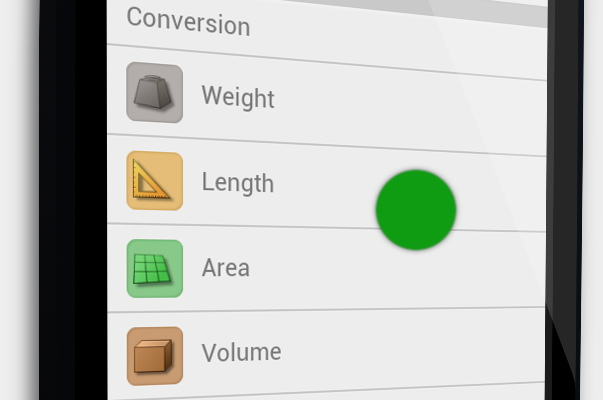
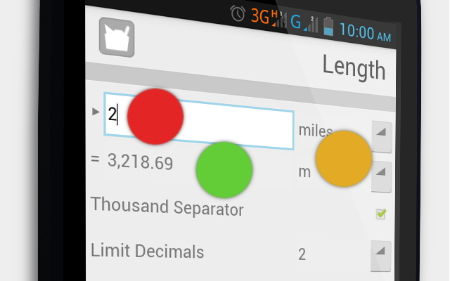

Help

Select the
category
you want to convert.

Input the
value
and select the desired
units
. The
result
will be available in real-time as you do so.
You have
options
to disable thousand separator for the result and to change the limit of decimal number.